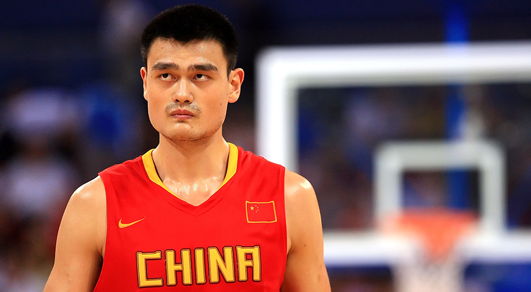

At the age of 13 Yao tried out for a team in the CBA called the Shanghai Sharks, which was a junior team. He practiced 10 hours a day and after the tryout he found out that he made the team. Yao would play with them for four years and then join the senior Sharks team. Here Yao would average 10 points and 8 rebounds a game in his rookie season. DUring the next season Yao would break his foot for the second time, which Yao would claim reduced his jumping ability by four to six inches. In his second and third year with the sharks, they made it to the finals, but would lose out ot the Bayi Rockets. The following year one of the star Bayi Rockets; Wang Zhizhi, left to become the first Chinese player to declare for the NBA draft. It was this year that Yao's team would win the CBA championship. In the playoffs during his final year with the Sharks Yao would go on to average 38.9 points, 20.2 rebounds and shot 76.6% from the field.
In 1999 Yao was pressured to eneter the NBA draft, but ended up not doing so that year. it was in 2002 that he decided to declare and a group of adverisers were formed which later became to be known as Team Yao. Yao was projected to go number one overall but NBA teams were uncertian if the CBA would allow Yao to play in the NBA.